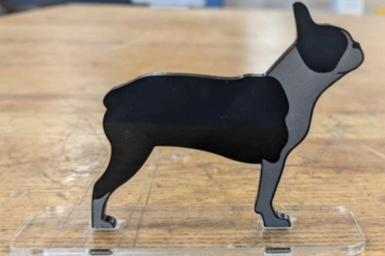

Project Overview
As the summer came to an end, the Singh Imagineering Lab at the Boston University College of Engineering held a Laser Cutter WorkShop. Leading up to this workshop I made from scratch a project guide of how to bring an idea from design to desk in the form of laser cut acrylic standees. This workshop taught students how to use Adobe Illustrator to make 2D laser cuttable files that when laser cut and engraved fit together seamlessly.

Photo of the Final Product and Workshop



More info:
← Previous Project Next Project →